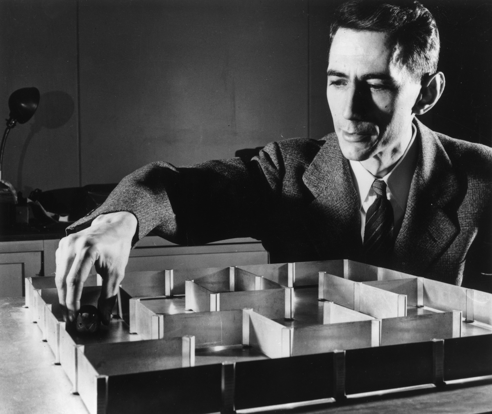

<style>
    main {
        background-color: lightgray;
        border-radius: 2%;
    }
    #tribute-info {
        margin: 10px;
        padding: 20px;
    }
    h1 {
        text-align: center;
    }
    h2 {
        text-align: center;
    }
    #img-div {
        margin: 20px;
        background-color: white;
        text-align: center;
    }
    #image {
        width: 70%;
        height: auto;
        padding-bottom: 15px;
        text-align: center;
        margin: 20px;
    }

</style>

<!DOCTYPE html>
<html>
<head>
    <title>Claude Elwood Shannon</title>
</head>
<main>
    <h1>Claude Elwood Shannon</h1>
    <h2>The Father of Information Theory</h2>
    <div id="img-div">
        
        <figcaption id="img-caption">Shannon's Theseus</figcaption>
    </div>
    <div id="tribute-info">
    <h3>The life of Claude Shannon:</h3>
    <ul>
        <li>
            <strong><time datetime="1916-04-30">April, 30<sup>th</sup>, 1916</time>: Shannon's birth</strong>
            <br>
            Claude Shannon was born in Petoskey, Michigan. He was the second child of Mabel Shannon and Claude Sr. He
            had a sister named Catherine.
        </li>
        <li>
            <strong><time datetime="1932-07-17">June, 17<sup>th</sup>, 1932</time>: Graduation I</strong>
            <br>
            Claude Shannon graduated from Gaylord High School in 1932.
            Following his sister, he enrolled at the University of Michigan.
        </li>
        <li>
            <strong><time datetime="1936-05-13">May, 13<sup>th</sup>, 1936</time>: Graduation II</strong>
            <br>
            Shannon graduated from the University of Michigan with a double Bachelor's degree: Mathematics and
            Electrical Engineering.
        </li>
        <li>
            <strong><time datetime="1936">1936</time>: Graduate Studies at MIT</strong>
            <br>
            Shannon started his graduate studies at the Masschussetts Institute of Technology (MIT).
        </li>
        <li>
            <strong>
                <time datetime="1937">1937</time>: Master's Degree
            </strong>
            <br>
            He received his master's degree in Electrical Engineering. His thesis was "A Symbolic Analysis of Relay and
            Switching Circuits".
        </li>
        <li>
            <strong>
                <time datetime="1940">1940</time>: PhD Degree
            </strong>
            <br>
            Shannon received his PhD degree in Mathematics from MIT. His thesis was entitled "An Algebra for
            Theoretical Genetics".
        </li>
        <li>
            <strong>
                <time datetime="1941">1941</time>: Bell Labs Research
            </strong>
            <br>
            Shannon took a research position at Bell Labs. His war-time work was used to build a secret communication
            system which helped Roosevelt and Churchill communicate secretly.
            His results on cryptography were published in 1949 after having been de-classified.
        </li>
        <li>
            <strong>
                <time datetime="1948">1948</time>: Birth of Information Theory
            </strong>
            <br>
            Shannon published his works on information theory "A Mathematical Theory of Communication", founding the
            field.
        </li>
        <li>
            <strong>
                <time datetime="1949">1949</time>: Marriage
            </strong>
            <br>
            Shannon married his wife, Betty Shannon when she was a numerical analyst at Bell Labs.
            She assisted him with some of his famous inventions.
        </li>
        <li>
            <strong>
                <time datetime="1950">1950</time>: "Theseus"
            </strong>
            <br>
            Claude Shannon made his electromechanical mouse "Theseus". It could navigate a 25x25 grid-like maze,
            without needing a consistent starting point.
        </li>
        <li>
            <strong>
                <time datetime="1950">1950</time>: Shannon the grandmaster
            </strong>
            <br>
            Shannon published a paper which estimates the game-tree complexity of chess, which is approximately
            10<sup>120</sup>. This number is referred to as "Shannon's number" and is still considered as an accurate
            estimate of the game's complexity.
            In the same year, Shannon presented a paper "Programming a Computer for Chess". He described how to program
            a computer to play chess based on position scoring and move selection.
        </li>
        <li>
            <strong>
                <time datetime="2001">2001</time>: Death
            </strong>
            <br>
            After suffering from the progressive declines of Alzheimer's disease for some years, Shannon died at the
            age of 85, on February 24, 2001.
        </li>
    </ul>
    <p>
    <strong>Awards:<br></strong>
    National Medal of Science (1966) and honorary degrees from Yale (1954), Michigan (1961), Princeton (1962), Edin-
    burgh (1964), Pittsburgh (1964), Northwestern (1970), Oxford (1978), East Anglia (1982), Carnegie-Mellon (1984),
    Tufts (1987), and the University of Pennsylvania (1991). He was also the first recipient of the Harvey Prize
    (1972), the Kyoto Prize (1985), and the Shannon Award (1973).
    His Collected Papers, published in 1993, contains 127 publications on topics ranging from communications to
    computing, and juggling to "mind-reading" machines.

    More information about Shannon can be found on his <a href="https://www.itsoc.org/about/shannon" target="_blank">itsoc page</a> and on his <a href="https://en.wikipedia.org/wiki/Claude_Shannon" target="_blank">Wikipedia page</a>.
    </p>
</div>
</main>

</html>
